Despliegue de una aplicación PHP con Nginx y MySQL usando Docker y docker-compose
Estructura de Directorios
Primero, creamos la estructura de directorios necesaria para contener los archivos de configuración y la aplicación.
mkdir -p /home/usuario/practica6-2/{nginx,php,www/html}
cd practica6-2
touch docker-compose.yml
touch Dockerfile
touch nginx/default.conf
touch php/Dockerfile
touch www/html/index.php
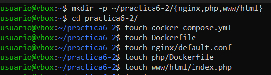
Dentro de la carpeta /home/usuario/practica6-2/, se generan las siguientes carpetas y archivos:
/home/usuario/practica6-2/
├── docker-compose.yml
├── nginx
│ ├── default.conf
│ └── Dockerfile
├── php
│ └── Dockerfile
└── www
└── html
└── index.php
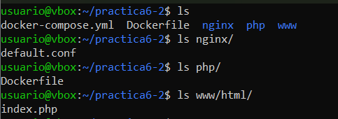
Creación del contenedor de Nginx
Primero, configuramos el contenedor de Nginx. En el archivo docker-compose.yml, especificamos lo siguiente:
nginx:
assets/images2/image: nginx:latest
container_name: nginx-container
ports:
- 80:80
Esta configuración será la encargada de descargarse la última versión de la assets/images2/imagen de Nginx, creando un contenedor con ella y publicar o escuchar en el puerto 80.
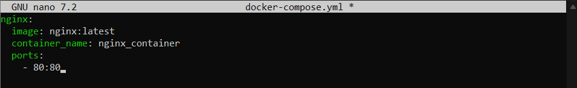
Ejecutamos el contenedor con:
sudo docker-compose up -d
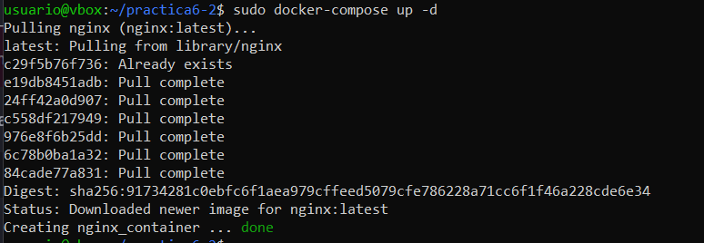
Al ejecutar docker ps, confirmamos que el contenedor de Nginx está corriendo. Luego, accedemos a http/192.168.76.147 (en mi caso) y vemos la página de bienvenida de Nginx.
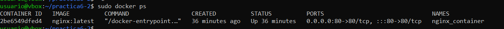 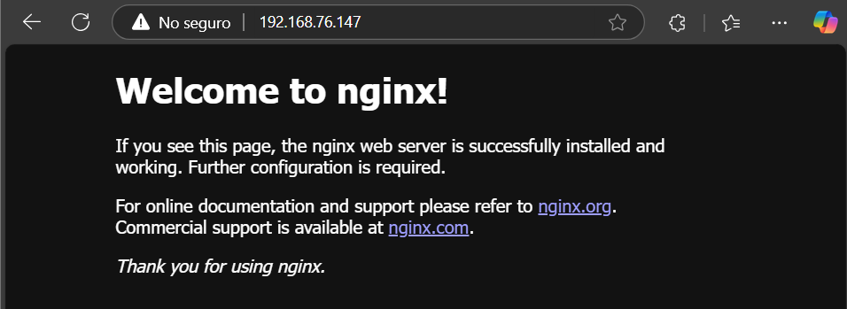
Creación del contenedor PHP
El siguiente paso es crear el contenedor PHP. PAra ello editaremos el archivo index.php dentro de www/html/:
<!DOCTYPE html>
<head>
<title>¡Hola mundo!</title>
</head>
<body>
<h1>¡Hola mundo!</h1>
<p><?php echo 'Estamos corriendo PHP, version: ' . phpversion(); ?></p>
</body>
</html>
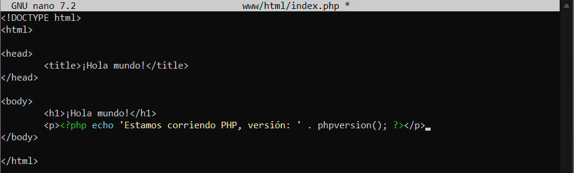 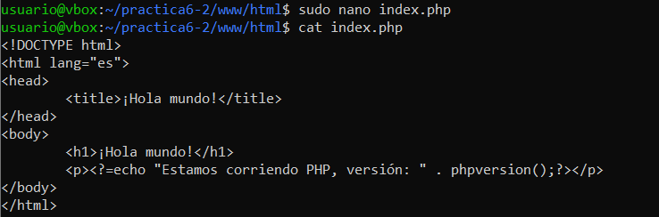
A continuación, configuramos el archivo default.conf dentro de la carpeta nginx/:
server {
listen 80 default_server;
root /var/www/html;
index index.html index.php;
charset utf-8;
location / {
try_files $uri $uri/ /index.php?$query_string;
}
location = /favicon.ico { access_log off; log_not_found off; }
location = /robots.txt { access_log off; log_not_found off; }
access_log off;
error_log /var/log/nginx/error.log error;
sendfile off;
client_max_body_size 100m;
location ~ .php$ {
fastcgi_split_path_info ^(.+.php)(/.+)$;
fastcgi_pass php:9000;
fastcgi_index index.php;
include fastcgi_params;
fastcgi_param SCRIPT_FILENAME $document_root$fastcgi_script_name;
fastcgi_intercept_errors off;
fastcgi_buffer_size 16k;
fastcgi_buffers 4 16k;
}
location ~ /.ht {
deny all;
}
}
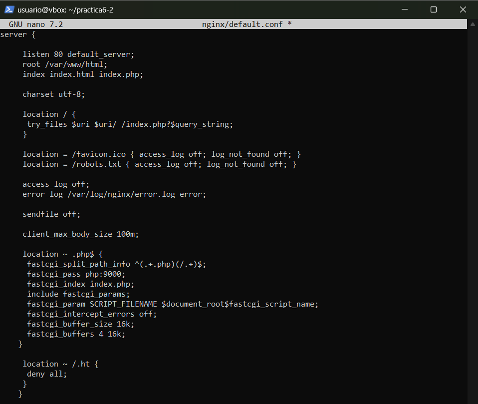
El Dockerfile en la carpeta nginx/:
FROM nginx:latest
COPY ./default.conf /etc/nginx/conf.d/default.conf
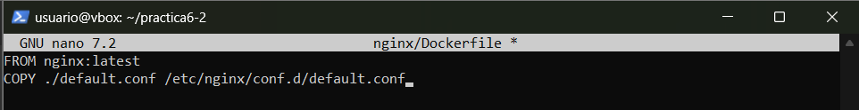
Finalmente, actualizamos el docker-compose.yml para agregar el contenedor PHP y asociarlo al contenedor Nginx:
services:
nginx:
build: ./nginx/
container_name: nginx-container
ports:
- 80:80
links:
- php
volumes:
- ./www/html/:/var/www/html/
php:
assets/images2/image: php:7.0-fpm
container_name: php-container
expose:
- 9000
volumes:
- ./www/html/:/var/www/html/
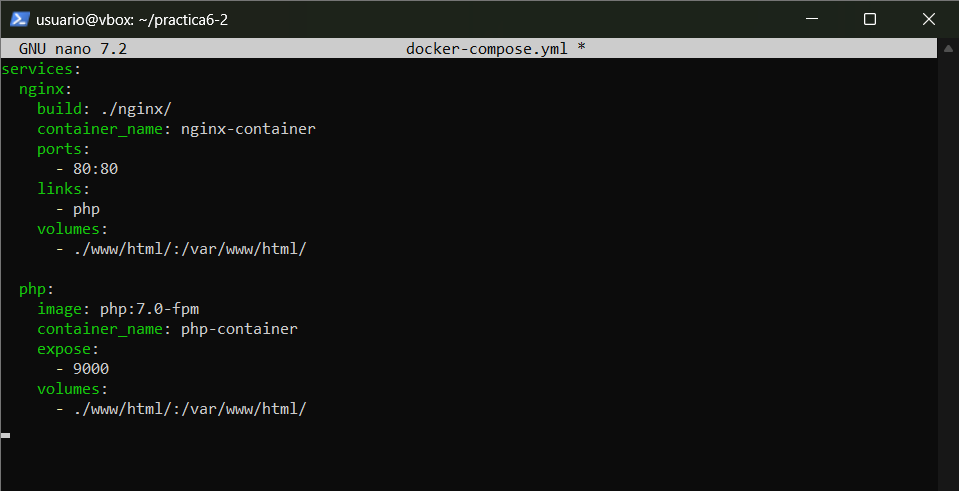
Ejecutamos nuevamente el comando:
sudo docker-compose up -d
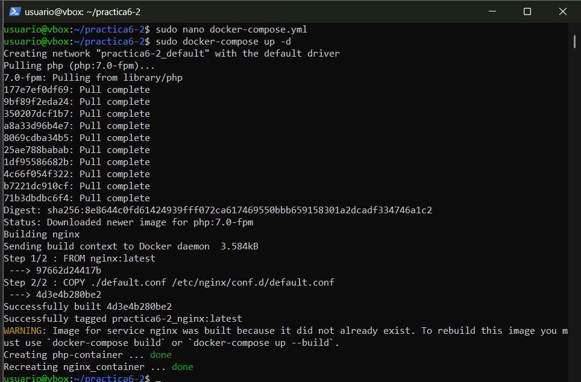 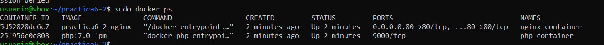
Accedemos a http://192.168.76.147 y vemos la página "¡Hola mundo!", confirmando que PHP está funcionando correctamente.
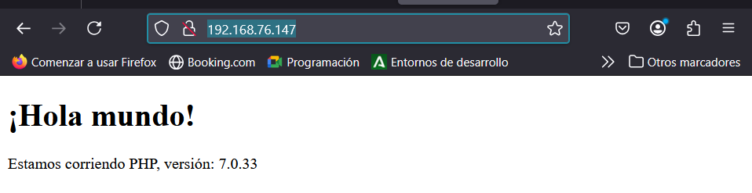
Creación de un contenedor de datos
Para mejorar la persistencia de los datos, creamos un contenedor independiente que se encargará de almacenar los datos de la aplicación:
services:
nginx:
build: ./nginx/
container_name: nginx-container
ports:
- 80:80
links:
- php
volumes_from:
- app-data
php:
assets/images2/image: php:7.0-fpm
container_name: php-container
expose:
- 9000
volumes_from:
- app-data
app-data:
assets/images2/image: php:7.0-fpm
container_name: app-data-container
volumes:
- ./www/html/:/var/www/html/
command: "true"
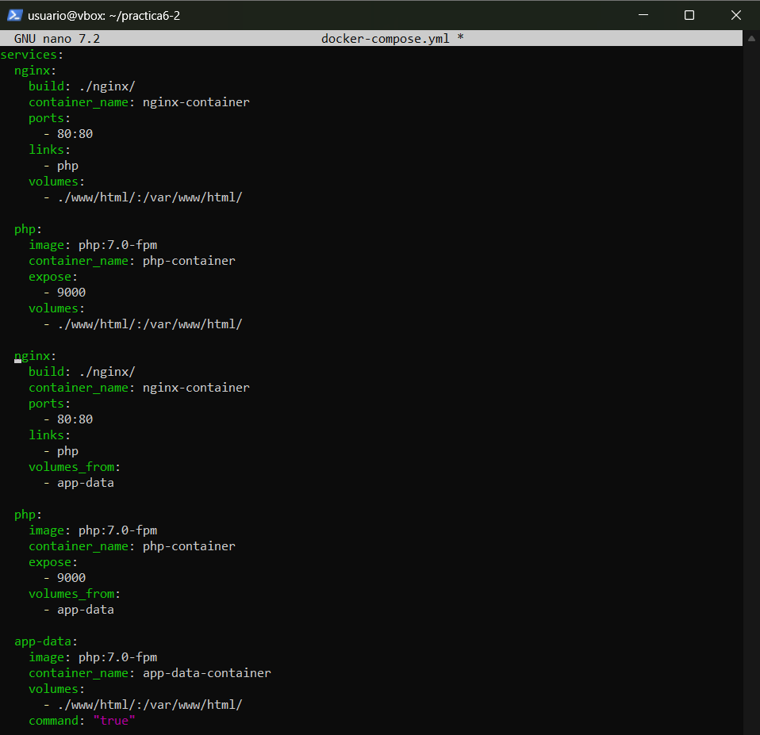
Ejecutamos nuevamente sudo docker-compose up -d para crear y lanzar los contenedores.
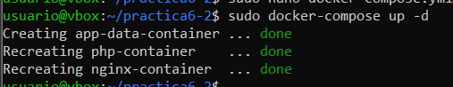
Ahora vemos que todos están corriendo correctamente con el comando sudo docker ps -a.
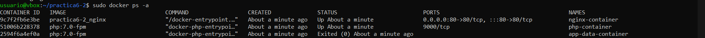
Creación de un contenedor MySQL
Para conectar PHP con MySQL, añadimos un contenedor para MySQL en el archivo docker-compose.yml. Primero, instalamos la extensión pdo_mysql en PHP creando el Dockerfile dentro de php/:
FROM php:7.0-fpm
RUN docker-php-ext-install pdo_mysql
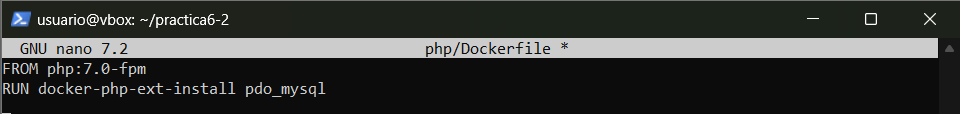
Luego, actualizamos docker-compose.yml:
services:
nginx:
build: ./nginx/
container_name: nginx-container
ports:
- 80:80
links:
- php
volumes_from:
- app-data
php:
build: ./php/
container_name: php-container
expose:
- 9000
links:
- mysql
volumes_from:
- app-data
app-data:
assets/images2/image: php:7.0-fpm
container_name: app-data-container
volumes:
- ./www/html/:/var/www/html/
command: "true"
mysql:
assets/images2/image: mysql:5.7
container_name: mysql-container
volumes_from:
- mysql-data
environment:
MYSQL_ROOT_PASSWORD: secret
MYSQL_DATABASE: mydb
MYSQL_USER: myuser
MYSQL_PASSWORD: password
mysql-data:
assets/images2/image: mysql:5.7
container_name: mysql-data-container
volumes:
- /var/lib/mysql
command: "true"
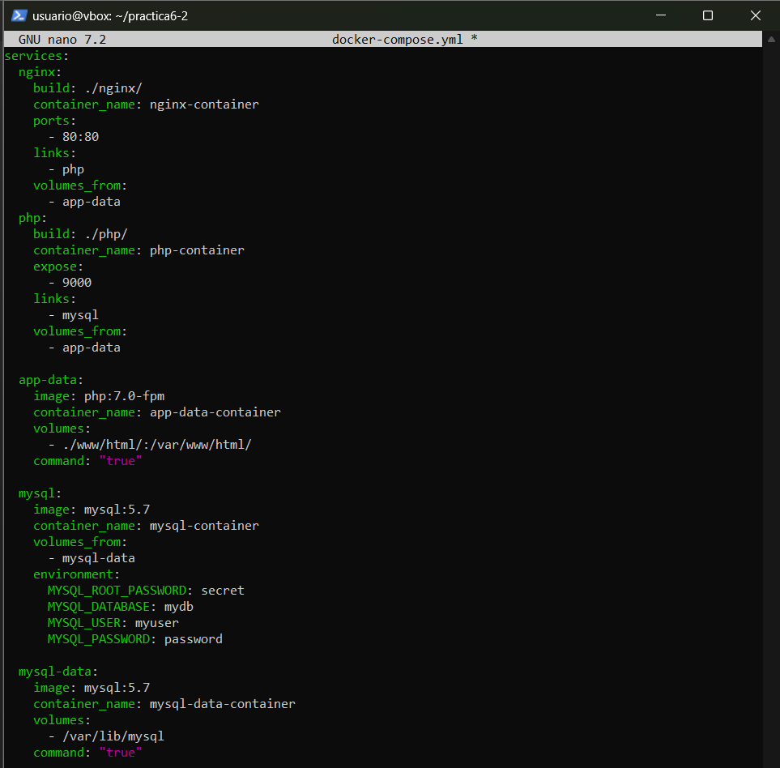
Creamos o modificamos el archivo index.php para conectar con la base de datos MySQL y verificar las tablas.
<!DOCTYPE html>
<html>
<head>
<title>¡Hola mundo!</title>
</head>
<body>
<h1>¡Hola mundo!</h1>
<p><?php echo 'Estamos corriendo PHP, version: ' . phpversion(); ?></p>
<?
$database ="mydb";
$user = "myuser";
$password = "password";
$host = "mysql";
$connection = new PDO("mysql:host={$host};dbname={$database};charset=utf8", $user, $password);
$query = $connection->query("SELECT TABLE_NAME FROM information_schema.TABLES WHERE TABLE_TYPE='BASE TABLE'");
$tables = $query->fetchAll(PDO::FETCH_COLUMN);
if (empty($tables)) {
echo "<p>No hay tablas en la base de datos \"{$database}\".</p>";
} else {
echo "<p>La base de datos \"{$database}\" tiene las siguientes tablas:</p>";
echo "<ul>";
foreach ($tables as $table) {
echo "<li>{$table}</li>";
}
echo "</ul>";
}
?>
</body>
</html>
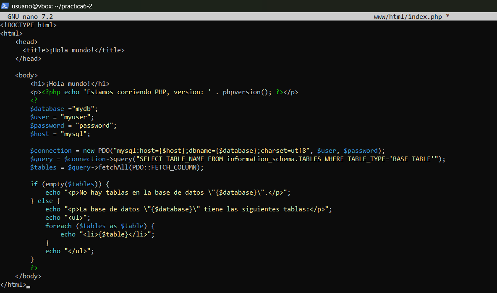
Finalmente, ejecutamos sudo docker-compose up -d para arrancar los contenedores.
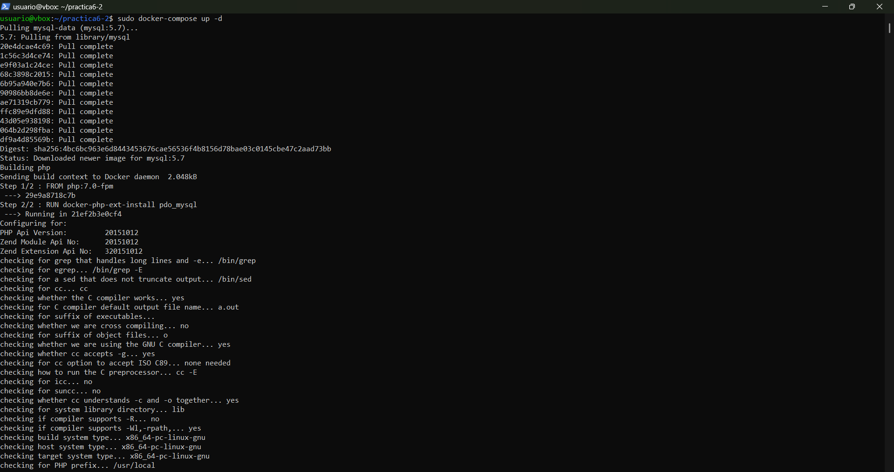 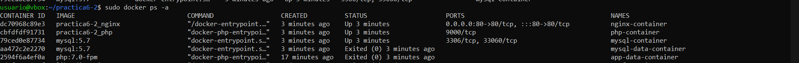
Verificación de la conexión a MySQL
Accedemos a http://
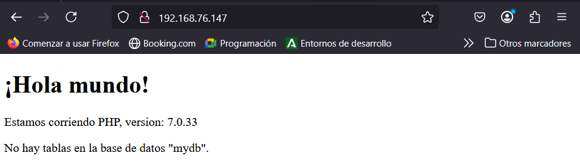
Esto no es realmente así, sino que no son visibles para un usuario normal, simplemente hay que cambiar el index.php y cambiar el usuario y la contraseña
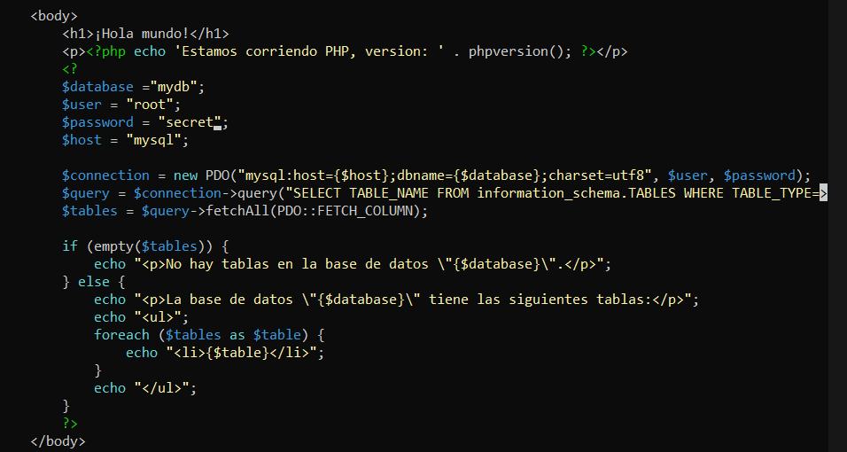 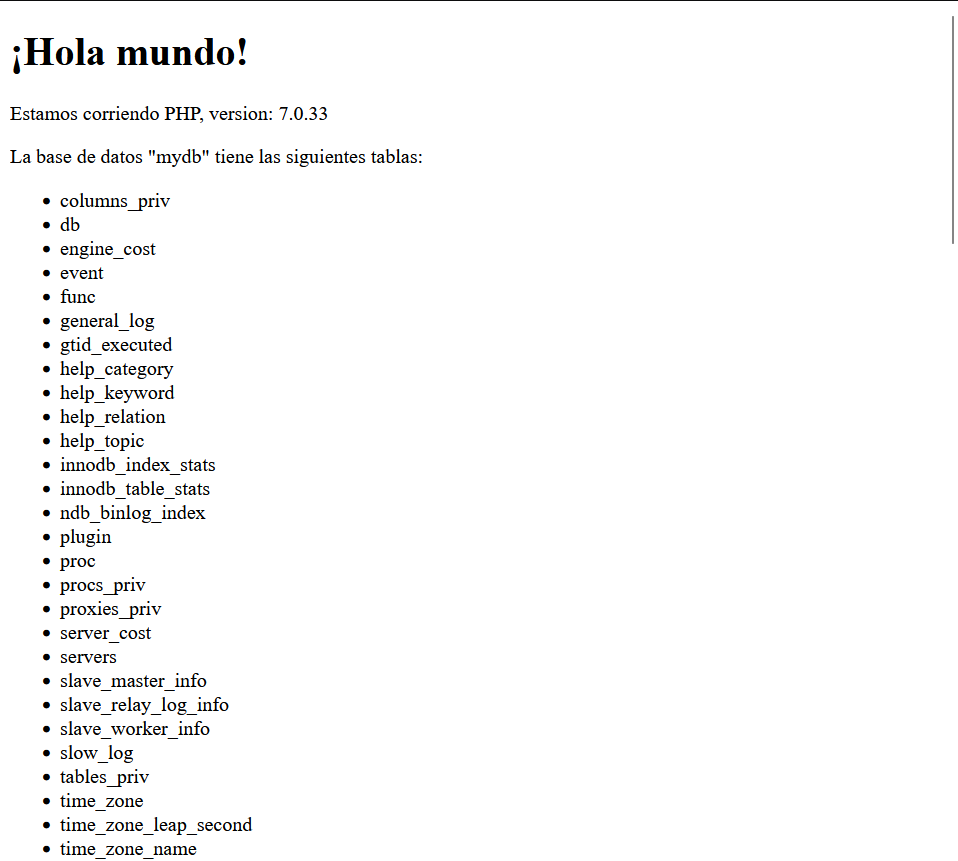
Esquema de la Infraestructura Completa
La infraestructura final consta de los siguientes contenedores:
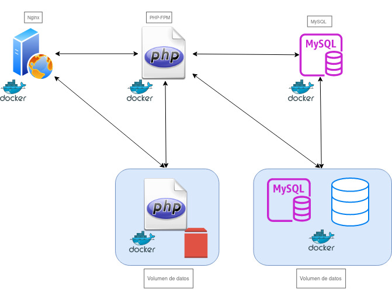
Author: Jorge Pradillo Hinterberger